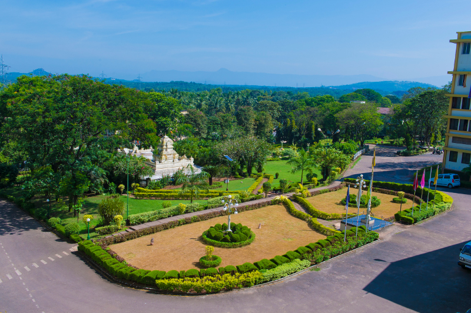

PROGRAMS
WELCOME TO NMAMIT

ABOUT US
Nitte Mahalinga Adyantaya Memorial Institute of Technology(NMAMIT), Nitte, established in 1986 and recognized by the All India Council for Technical Education, New Delhi, has been a constituent college of Nitte (Deemed to be University), Mangaluru,since June 2022. Rank band 101-150 in the National Institutional Ranking Framework (NIRF) 2023 by Ministry of Education, Government of India, the College has been placed under Platinum category for having high industry linkages by the AICTE-CII Survey of Industry-Linked Technical Institutes 2020. NMAMIT, the off-campus centre of Nitte DU located at Nitte village, has active collaborations with several international universities and organizations for faculty and student exchanges, research, internships and placements.
The Institute offers UG engineering program in fifteen disciplines; Artificial Intelligence & Machine Learning (AI&ML), Artificial Intelligence & Data Science (AI&DS), Biotechnology (BT), Civil Engineering(CIV), Computer & Communication Engineering (CCE), Computer Science & Engineering(CS),Computer Science (Cyber Security), Computer Science (Full Stack Development), Electrical & Electronics Engineering (E&E), Electronics & Communication Engineering (E&C), Electronics (VLSI Design & Technology), Electronics & Communication Engineering (ACT), Information Science & Engineering (IS) , Mechanical Engineering(MECH) and Robotics & Artificial Intelligence (R&AI ). Out of these programs, seven UG programs i.e., BT, CIV, CS,E&E, E&C, IS and MECH are accredited by NBA, New Delhi under Tier - I category till 30 June 2025. The institute also offers PG program M.Tech. in seven disciplines namely Construction Technology, Computer Science & Engineering,Cyber Security, Electric Vehicle Technology, Machine Design, Structural Engineering and VLSI Design & Embedded Systems as well as MCA program. All the departments have qualified research guides for students interested in taking up research work leading to Ph.D.
NMAMITis located in a vibrant, serene and green campus at Nitte spread over 125 acres and is nestled in the Western Ghats of Southern India on the way to the Kudremukh ranges. The nearest airport is Mangaluru International Airport (45 km). The nearest railway stations are Udupi (40 km) and Mangaluru (50 km). Nitte is 19 km from NH-66 connecting Kochi (Kerala) and Panvel (Mumbai) and 7 km from NH-169 connecting Mangaluru and Solapur (Maharashtra).